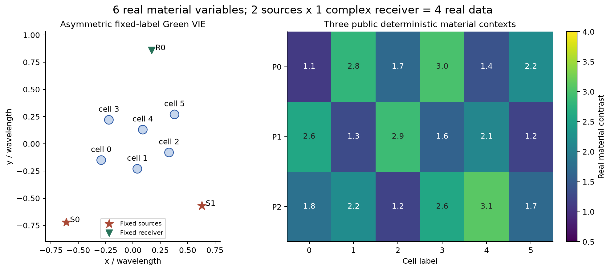
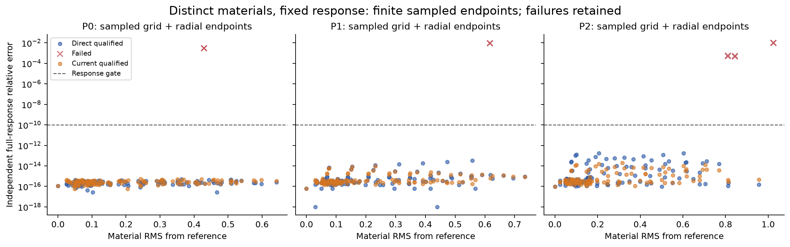
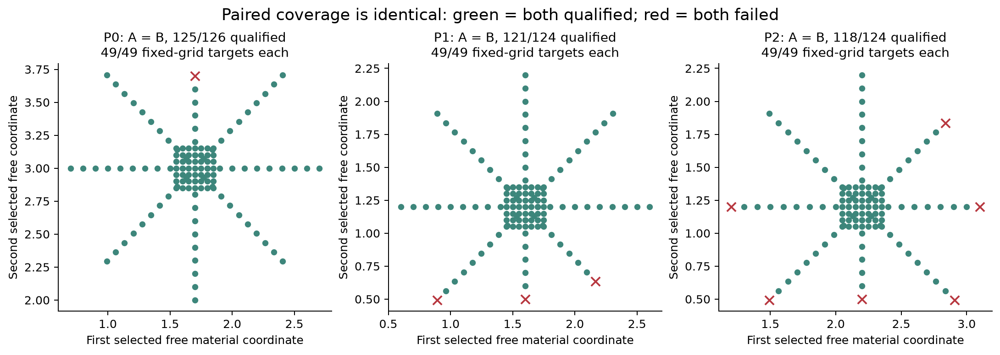
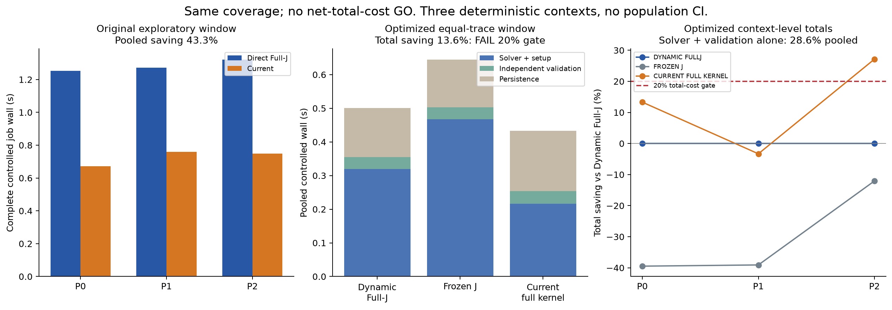
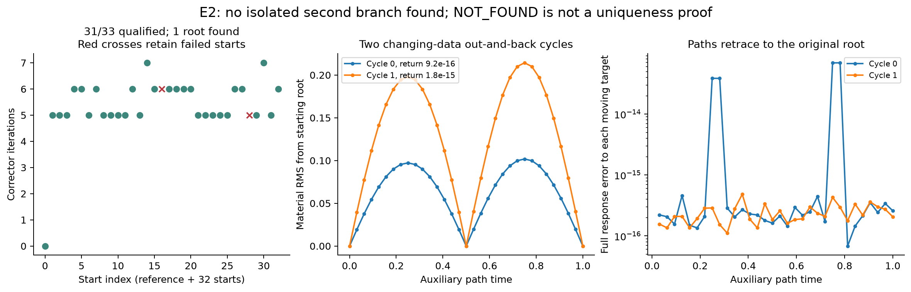
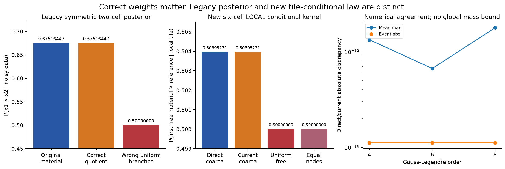
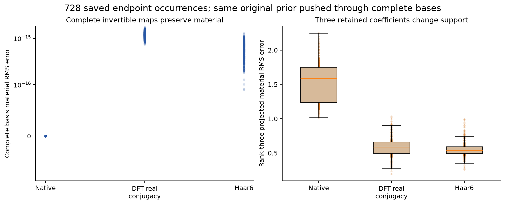
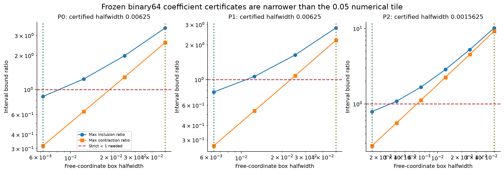

先分清纤维存在、合法覆盖与算法收益
本轮确实构造了不同材料、同完整响应的非对称局部图册；直接材料法已经做到相同覆盖。电流法省了RHS，但公平总成本只省13.6%，不足预定20%。图册存在、概率正确与算法划算，分别裁决。
共享真实材料
接收零空间电流仍须满足所有照明共同的合法实材料约束。
非对称局部图册
真实Green-VIE中构造不同材料；局部证书与采样覆盖分开。
概率、覆盖与费用
正确局部coarea核不自动给全域质量；RHS优势不代替总成本。
本轮起点与历史事实
理论到实验：哪些命题真正被检验
输入报告全文、源代码、协议与历史审计见inputs及audit/input_evidence、history_contract。原两cell对称、branchprior及monodromy仅回归，不算新发现。新实验编号按用户任务：E1非对称连续图册，E2独立离散分支，E3跨表示，E4概率；与附件原建议编号差异明确保留。
Maxwell与材料约束
采用真实disk Green：自项 iπka H1(ka)/2−1；互项 iπka J1(ka)H0(kd)/2。完整状态L=I−diag(m)G，j=L⁻¹diag(m)Einc，y=Sj。不是Born。Full-J为(SL⁻¹)_i E_is；transpose解支付一个receiver RHS，source-major实化与sigma一致。
在接收方程Sj=u下，j=j0+Nc；shared-material minors为0只是非节点条件的一部分。实际算法保留实m并解j−mE=0，所以同时处理所有源、实值支持和节点。当前构造没有节点，节点一般仍须保留m。单独dark-current已经得到不可实现反例。
维数、局部证书与全域覆盖
n=6,k=4且合法内点、邻域满行秩时，标准IFT给二维局部纤维；这不是原创维数定理。interval_chart使用储存系数为精确常数的复矩形区间算术，R近似逆的Neumann余项包围L⁻¹，再包围J。T(d)=d−R_J(F(d,a)−u)将dependent box映到自身且带权导数范数<1时，每个自由a有唯一dependent根。三参考半宽为[0.00625, 0.00625, 0.0015625]。不包含真实Hankel系数的严格区间误差、不认证整个材料域或continuum。
所有738端点的后付伴随J均满行秩，最大dependent条件数7.403；这只是节点诊断。原在线corrector未执行逐节点rank-stop，事后无越过阈值不追认为原算法在线证书。两个方法都没有认证跨过奇异chart、整个连通分量或全部原prior质量。
测度
材料图册m(a)=[d(a),a]的coarea密度p(m)/J_F * sqrt(det(DmᵀDm))，与p(m)/|det J_dep|相等；current恢复需要的是材料切向metric，不是高维c的平坦密度。E4只检验同一原prior的局部核。固定精确(p,q)时的0.75，与有限噪声的0.6751644709不同。均匀branch不能由群的存在推出。
原任务差异与未实现
原默认32/64双层E4的解析响应预算不适合保守30k合并账；本轮只新32并明确缓存64。最强普通基线具有最小接收伴随RHS；成本后补控制挑战而非挽救current结果。复杂monodromy因有限覆盖/判别式前提缺失NOT_RUN。完整Fourier/Wavelet成功只记换基。新模型不是P1，原Full66后验仍UNQUALIFIED。
本轮真实结果与适用范围
2026-10-29。完整实验已封账。实际支付 15,115 complex RHS，另有闭式物理响应 6,164 source-RHS等价；更保守合计 21,279/30,000。原R6/R7只读，没有预算转移。
保守合并预算
15,115实际RHS＋6,164闭式等价
相同局部网格覆盖
两方法均通过；不是147独立parent
公平总成本门
求解＋验收子项28.6%另列
实际主图
图的适用范围以原文为准
非对称固定标签几何与参考材料

图的适用范围以原文为准
实际材料位移与完整响应

图的适用范围以原文为准
两图册覆盖逐目标配对

图的适用范围以原文为准
两个成本窗口及强普通基线

图的适用范围以原文为准
独立满秩分支搜索

图的适用范围以原文为准
分支权重与局部coarea积分

图的适用范围以原文为准
完整换基与截断支持

图的适用范围以原文为准
小区间证书的实际覆盖范围

负结果与未运行项目
失败、修复、边界与未执行
- E0原物理20RHS全部成功；写入np.bool_失败。原失败job/log/源码保留；np.generic.item修复只影响序列化。通过A/RHS/解精确缓存匹配恢复完整命名空间，0新RHS，不伪称新独立solve。
- E2已完成33启动和第一个循环点时，响应与resolvent的sigma_min键重名。保留775RHS及INTERRUPTED.json，改名response_sigma_min；复用原33启动和首节点，只付870RHS完成其余循环。阈值、种子、方法不变。
- E1二法各10个目标未合格，包含材料越界与边界/正确器停滞；不删除失败，不把它们算成低费用成功。33多启动仅31严格合格；其余2保留。
- 小图册区间bound在较大box太松，按事前固定halving序列得到更小认证box。不能用这些小box认证0.05积分片或径向全路径。
- 主cost窗口看似43.3%节时，但轨迹保存不匹配。公平buffered完整trace窗口总节时仅13.6%：保留旧数值并撤回其独立总成本主张，不改20%门。记录和代数变量膨胀会抵消RHS优势。
- 六个70dps合并snapshot原action写END序号。原文件及ledger未改，HIGH_PRECISION_SNAPSHOT_LINK_ADDENDUM与追加事件明确关联两源已支付BEGIN；无费用丢失或额外物理。
- 补存current中间c/j/E通过纯代数重放374目标，原端点一致，0新RHS；重放CPU另记，不把它当新发现或加速。
- 文献两查询四操作429、CSI原文captcha、绘图system Python缺NumPy等行政失败保留。文献身份核验和可得全文层级分开；绘图换已有环境，不影响物理。
NOT_RUN：完整Full66/576研究、严格Hankel或连续PDE证书、全域根数/组件覆盖、复杂monodromy、新噪声/采集泛化、完整新模型带噪后验。没有通过降低容差、改noise、换先验或删接收救结果。
完整成本与资源缺口
实际预算与费用口径
已封账：实际15,115 complex RHS；闭式物理响应另计6,164 source-RHS等价；保守合计21,279/30,000。实际LU6,422。每run合并费用均不超过10,000，全部run已结束。
| 用途 | 实际RHS | 解析等价 |
|---|---|---|
| 旧E0回归（后续序列化恢复0） | 20 | 0 |
| 非对称probe | 77 | 0 |
| 六个主图册run | 5600 | 0 |
| 小区间图册验证 | 27 | 0 |
| E2原多启动及失败首节点 | 775 | 0 |
| E2只完成剩余循环 | 870 | 0 |
| 旧E4新32阶/缓存64 | 10 | 6164 |
| 新局部条件积分及错误耦合控制 | 4427 | 0 |
| 70位独立Full Maxwell | 12 | 0 |
| 统一完整轨迹成本控制 | 2559 | 0 |
| 保存场的事后伴随rank诊断 | 738 | 0 |
| E3、current轨迹代数重放与收尾 | 0 | 0 |
| 合计 | 15115 | 6164 |
闭式响应是3082次新的完整物理有理公式评估，没有把它们称为免费。它们没有实际调用线性求解器，故实际RHS与source-equivalent分列；本轮另以两者合并仍≤30k作为更保守限制。
实际Full forward状态尝试为显式Model/70位计数5660，加旧两cell8及旧E4数值验证5，共5673；Jacobian、inverse、adjoint和3082闭式状态不混成一个计数。峰值RSS约181.3 MiB；受控物理/代数job wall17.824秒、CPU13.464秒。资料阅读、写作、检索、绘图和发布不伪称包含在这些钟内。
主图册窗口A/B受控job约3.846/2.179秒，但原中间轨迹记录方式不一致，不能独立主张43.3%净加速。公平cost-control窗口包含方法setup、solver、独立验收和统一batch保存；current0.432827秒、dynamic0.500963秒，仅13.601%改善。整个cost-control RUN_END另有共同参考、循环和report开销，见RESOURCE_SUMMARY原始job，不混称逐方法窗口。
旧R6 6,860,984与R7 37,456不重计、不转预算。封账后不再运行物理、不清空账本、不删除失败。数组保持float64/complex128并无损NPZ压缩，未保存一批live LU或创建并行物理worker。
各路线判定：原文呈现
Z-ALG-E1 分项裁决
主裁决：NO-GO，针对“当前完整电流图册提供普通材料方法没有的独立覆盖或合格总成本优势”这一主张。
非对称6单元的合法局部材料纤维与条件数值积分是本轮真实正面结果。它们可作为有条件的小模型基准继续使用；不把它们改写成 current 方法获胜。
| 对象 | 裁决 | 理由 |
|---|---|---|
| 非对称正维材料图册 | 限定验证通过 | 6实材料、4实观测，真实Green；小区间收缩证书仅针对储存的binary64系数模型 |
| current额外合法覆盖 | 未建立 | 三参考材料的固定网格与径向节点资格完全相同，配对材料RMS约1e-12 |
| current总成本20%门 | FAIL | 统一完整轨迹后的方法窗口仅节省13.601%；一例变慢 |
| current求解＋验收子项 | 限定正面 | 节省28.613%，不可替代总费用门 |
| 非对称离散第二支 | 预算内未发现 | 33启动中31个合格并聚为1根；另两次失败保留；不是唯一性证明 |
| 局部coarea材料概率 | 数值局部PASS | 材料图册与current隐式切向权重一致；全域遗漏质量无非平凡界 |
| 跨decoder | 只完成换基 | 完整DFT/Haar6不改变材料与prior；截断改变支持 |
| 原P1 Full66 | 本轮不扩大 | 新支持和新采集；没有得到Full66新纤维或posterior证据 |
| 强IEEE TAP独立贡献 | 未建立 | 主要构件已有CSI/SOM、IFT和coarea先例；没有新的覆盖/总成本增量 |
不因“没找到第二根”宣称不存在多解，不因“当前电流法不划算”否定全部材料几何，也不以重复次数代替独立parent。